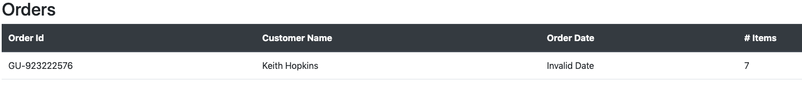

Task: Verifying Error Handling Logic in Front-End Web Development
Why Error Handling
Implementing a new user interface component can be challenging, as some user behaviours might cause the whole application to crash. Errors are unexpected situations that prevent normal operation of the application. There are many different types of errors which might occur. As you are implementing a UI component, you need to verify that the component appropriately handles all of the potential errors that might occur.
An expert front-end web developer wrote the following strategy they use when to handle possible errors a program might have and ensure that an appropriate fallback UI message is displayed instead of crashing the component tree.
Try out an expert strategy
To try the strategy out, open the Programming Task in a separate window in Chrome. The app contains a web app in which some of the elements do not work correctly:
- The Order Date column in the first row of the table shows ‘Invalid Date’ rather than notifying the user for this error: 
- Clicking on each row will pop up the detailed information of the row. If user clicks on the first row, the field ‘Winery’ is empty. If the user click on the third row, no information would pop up. See the following image for the empty field:

Use the following strategy and test how effective it would be in handling potential errors in the programming task page. To try out the strategy, first open the Programming Task. Place the Programming Task side by side with the strategy description on this page. This will make it easier for you to go back and forth between the description of the strategy and the web app.
If you’d like to see the source code for the web app, it is available here if you need it. Please follow the following strategy step by step to find the causes of these issues. After you finish using the strategy, we will ask you some questions about your experience with the strategy and the challenges you faced using it. As you work, please try to remember any of the difficulties you face using the strategy.
We are not testing your skill or programming proficiency
If you already know a better strategy for finding performance issues, that’s ok. But we’d like to get feedback on the suitability of this expert’s strategy, so please try out the strategy as written here. Once you’ve completed the strategy, you can move on to the next step.
Expert Strategy
Post-task Study
Thank you for trying out an expert’s programming strategy.
We are still learning how best to help developers write their strategies down in a way that allows you to follow along. A key goal of our study is to understand your experiences and any of your challenges in using these strategies. By sharing your experiences with us, we can work to make it easier to share expert programming strategies.
In as much detail as you can remember, please tell us about each of the challenges you experienced as you used this strategy. Please try to share with us what you found to be most difficult in understanding and using the strategy. For each difficulty, be as specific as possible in describing what you wanted to do and what made this hard for you to accomplish.
Post-task Questions
Please finish testing the strategy before you proceed to to these questions.
1- What made it challenging to work with the strategy? If the challenge is related to a specific line of the strategy, please specify the line with the related challenge. Please write as many challenges as you remember.
2- What do you think is missing?
3- What additional information, details, or features would make it easier for you to follow this strategy?
4- Do you think the strategy you used is clear? If not, please specify what was confusing or ambiguous.
Please tell us about other categories of challenges you faced which is not asked above, if any.